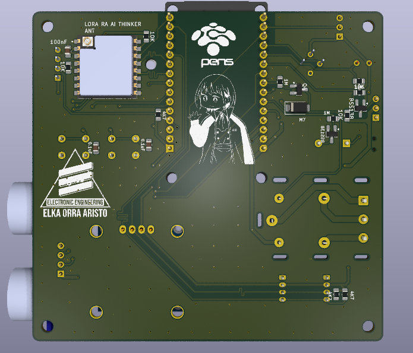
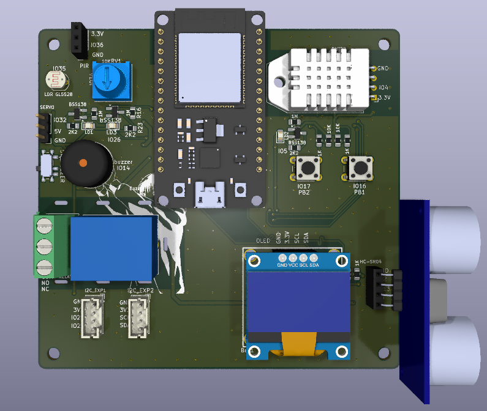
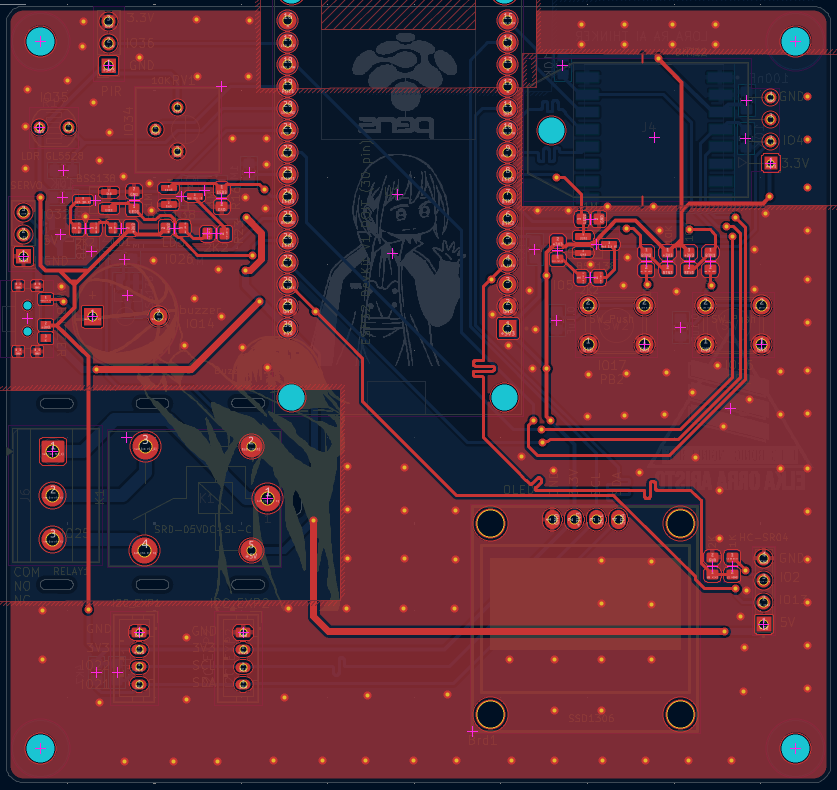
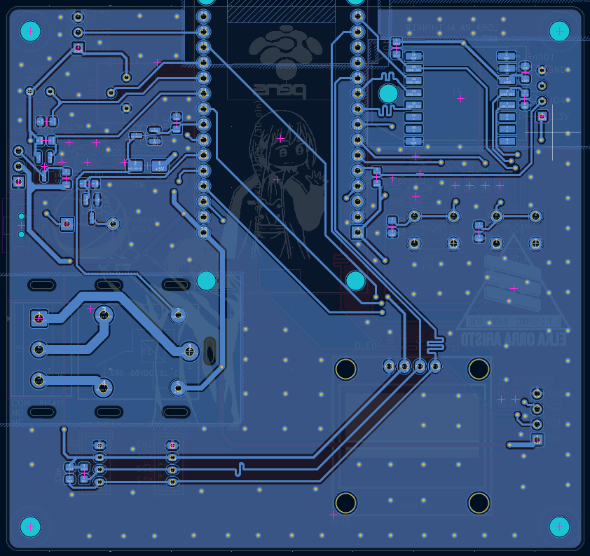

sistem integrasi berbagai sensordan output, Iot (esp32 + LOra)
Proyek ini dibuat sebagai bagian dari tugas mata kuliah Internet of Things (IoT) dengan tujuan untuk merancang dan merealisasikan sebuah papan sirkuit tercetak (PCB) 2 layer node IoT yang terintegrasi, praktis, dan mandiri berbasis modul mikrokontroler ESP32-DevKitC-32E serta modul radio LoRa Ai-Thinker Ra-02. Pembuatan proyek ini dilatarbelakangi oleh kebutuhan untuk menyatukan berbagai antarmuka sensor (potensiometer, LDR, PIR, DHT22, HC-SR04), aktuator (LED, buzzer, dua relay, servo), layar OLED, dan port ekspansi I2C ke dalam satu board ringkas yang mendukung komunikasi nirkabel jarak jauh..




Dalam proses perancangan layout PCB 2 layer untuk node IoT ini, terdapat beberapa tantangan teknis utama terkait tata letak (placement), isolasi termal sensor, serta integrasi bus komunikasi I2C. Berikut adalah masalah yang dihadapi beserta solusi teknis yang diterapkan:
Tantangan: Berdasarkan aturan perancangan, skematik terintegrasi dikunci (tidak boleh diubah) dan sensor suhu/kelembapan DHT22 diwajibkan berada di tepi papan serta jauh dari sumber panas seperti modul ESP32 maupun relay. Namun, dengan keterbatasan alokasi pin dan target ukuran papan yang ringkas (≤100×100 mm), menempatkan DHT22 terlalu jauh dari ESP32 justru membuat jalur routing sinyal menjadi berbelit-belit dan memakan banyak ruang.
Solusi: Modul DHT22 ditempatkan di tepi papan pada posisi terdekat dengan pin header ESP32 guna menjaga jalur data sinyal tetap pendek, rapi, dan minim noise. Untuk mengatasi risiko transmisi panas konduksi dari area ESP32, dibuat area isolasi khusus dengan cara menghapus bidang tembaga (copper pour GND) pada layer F.Cu (layer atas) tepat di bawah footprint modul DHT22. Penghilangan tembaga ini memutus rambatan panas (thermal conduction) melalui lapisan PCB, sehingga hasil pengukuran sensor tetap akurat dan tidak terdistorsi panas mikrokontroler.
Tantangan: Papan ini mengintegrasikan layar OLED 0.96" beserta dua port I2C eksternal tambahan (konektor JST PH 2.0 J11 & J12) yang berbagi bus sinyal SDA dan SCL bersama. Pengoperasian beberapa node I2C secara simultan berpotensi menimbulkan ketidakstabilan sinyal atau crosstalk jika tata jalur tidak tepat.
Solusi: Jalur sinyal SDA dan SCL dirutekan secara sejajar berdampingan menggunakan lebar jalur standar 0.3 mm. Pasangan resistor pull-up R10 dan R11 (4.7kΩ) diletakkan berdekatan dengan jalur SDA/SCL menuju modul OLED untuk menjamin integritas sinyal digital. Selain itu, bidang tembaga ground (ground plane) di layer B.Cu tepat di bawah area bus I2C dijaga tetap utuh tanpa terpotong jalur sinyal lain.
Tantangan: Menata 57 footprint komponen dalam area terbatas sambil memenuhi aturan area bebas tembaga (keepout zone) antena ESP32 dan jarak aman (clearance) 2 mm untuk area beban tegangan relay.
Solusi: Ujung antena PCB ESP32 diletakkan tepat di tepi papan dengan area Keepout (bebas track, via, dan copper pour) di kedua layer. Blok relay K1/K2 beserta terminal block dikelompokkan khusus di satu sisi papan dengan memberi jarak pemisah minimal 2 mm dari sirkuit logika.